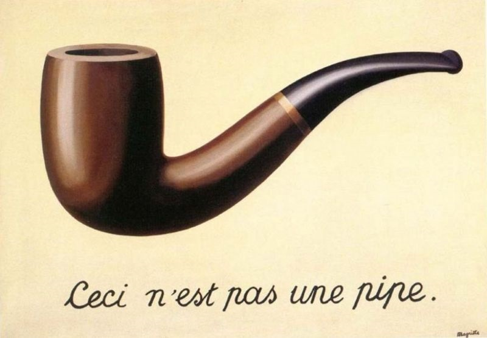
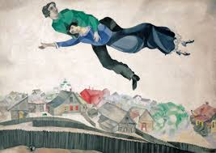
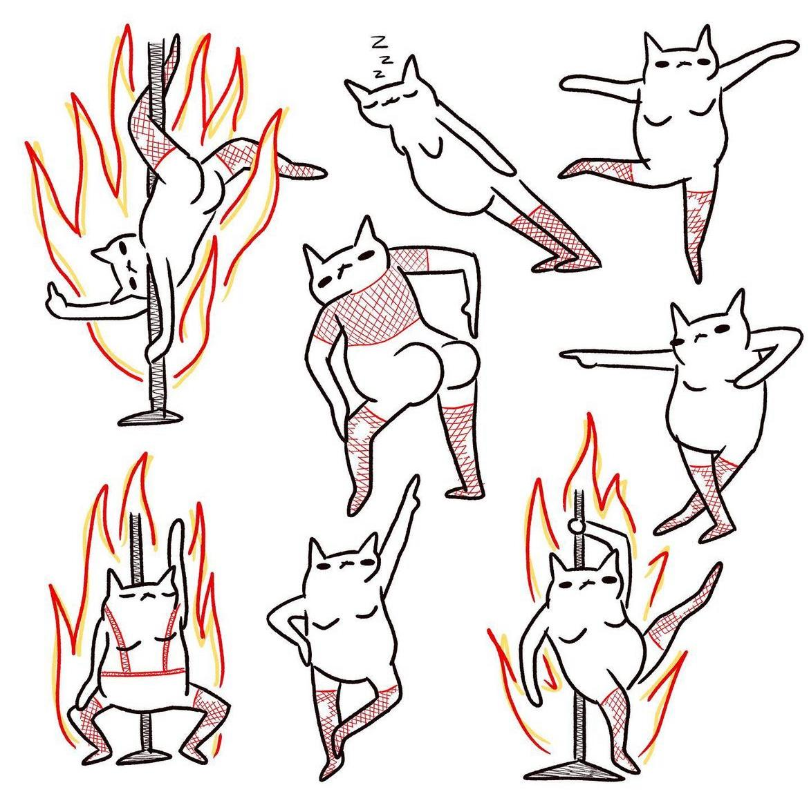

Primo Quarto
Magritte con Chunk di codice
Di seguito Abbildung 1 uno dei più grandi capolavori di Magritte.
Chagall con R-Markdown
In Abbildung 2 l’opera Oltre la città di Marc Chagall.

Ma torniamo ai grafici sui sassi
Code
library(ggplot2)
ggplot(rock,
aes(y=peri,x=shape, color =shape, size = peri)) + geom_point() +
theme_light() + theme(legend.position = "none") 
In Abbildung 3 c’è un grafico
Tabelle con i sassi
A seguire una Tabelle 1 sui sassi
Code
kableExtra::kable(rock[1:6, ])Tabelle 1: Una tabella sui sassi
| area | peri | shape | perm |
|---|---|---|---|
| 4990 | 2791.90 | 0.0903296 | 6.3 |
| 7002 | 3892.60 | 0.1486220 | 6.3 |
| 7558 | 3930.66 | 0.1833120 | 6.3 |
| 7352 | 3869.32 | 0.1170630 | 6.3 |
| 7943 | 3948.54 | 0.1224170 | 17.1 |
| 7979 | 4010.15 | 0.1670450 | 17.1 |
Parte con tre colonne
Testo nella prima colonna
Testo nella seconda colonna
Testo nella terza colonna
Ambiente griglia in tre parti
Parte prima
Parte seconda
Parte terza
Tabsets
Oltre alla passione per i sassi, coltivo una grande passione per le arti visive.
Diamo uno sgaurdo a Abbildung 4, di uno dei più grandi artisti della contemporaneità

Terzo tabset con il grafico dei dati